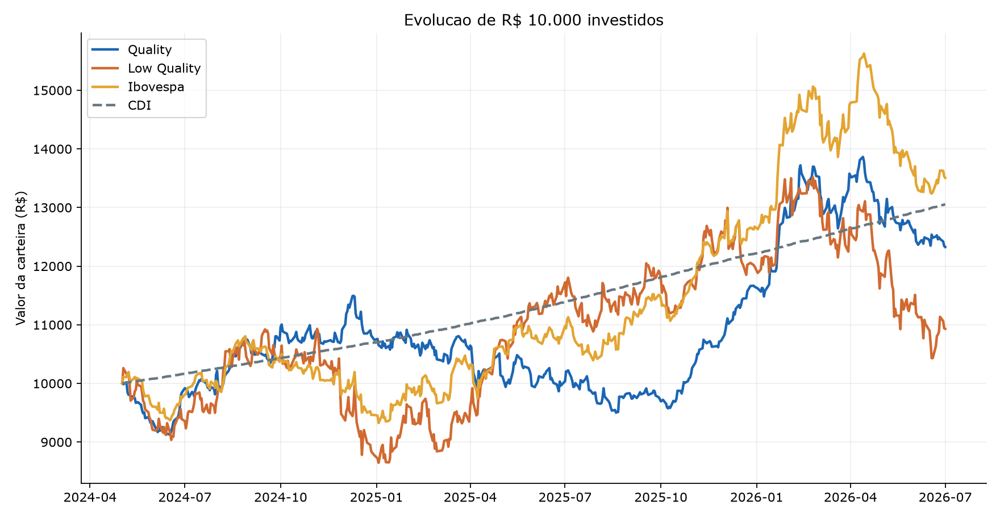
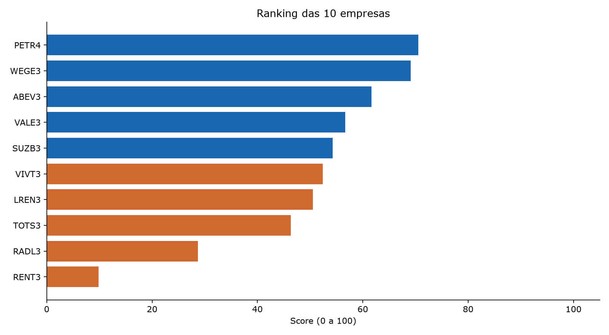
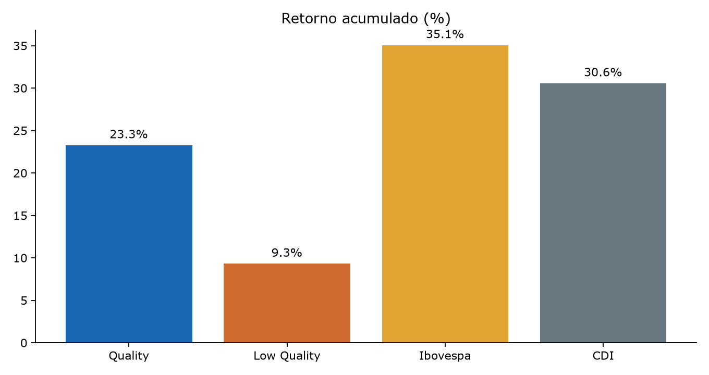
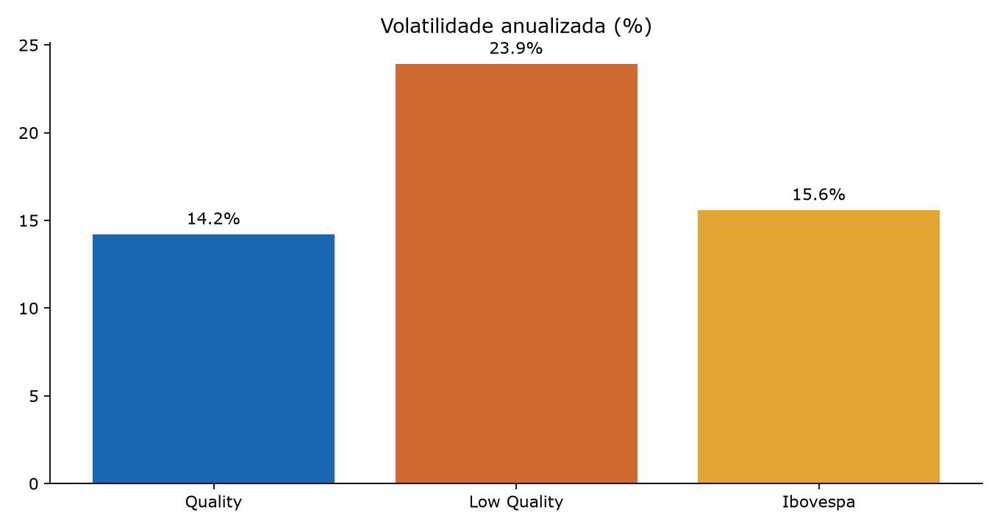
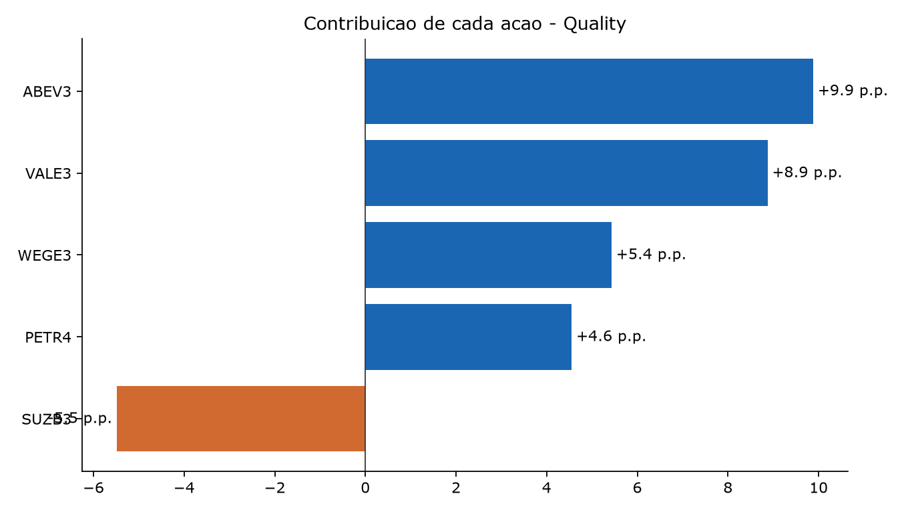
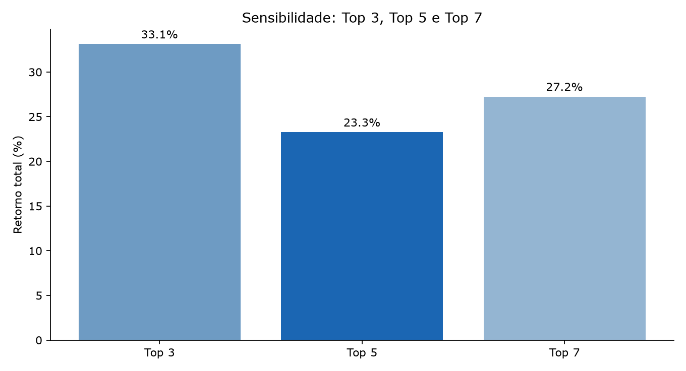

Analise academica de 10 empresas brasileiras | Formacao: 2024-05-02 | Fim: 2026-07-01
O fator qualidade busca identificar companhias com boa rentabilidade, menor comprometimento financeiro e maior conversao do lucro contabil em caixa.
O estudo compara uma carteira formada pelas cinco maiores notas com outra formada pelas cinco menores notas de um universo fixo de dez companhias.
Hipotese: empresas com melhores indicadores de qualidade podem apresentar desempenho e risco mais favoraveis. A hipotese e testada, nao pressuposta verdadeira.
Dez empresas nao financeiras escolhidas previamente por diversidade de atividades, sem utilizar o retorno posterior.
As demonstracoes financeiras consolidadas de 2023 foram extraidas do arquivo DFP da CVM, mantendo exclusivamente a versao mais recente entregue ate 30/04/2024.
Compra simulada no fechamento de 02/05/2024 e manutencao sem rebalanceamento ate 01/07/2026.
ROE, ROA e margem liquida compoem 40% da nota; endividamento e liquidez corrente, 30%; accruals, 30%.
A carteira Quality usa as cinco melhores, e Low Quality as demais cinco, com 20% iniciais por ativo.
O teste desconsidera impostos, taxas e corretagem.
Empresas Quality:
PETR4, WEGE3, ABEV3, VALE3, SUZB3.
Empresas Low Quality:
VIVT3, LREN3, TOTS3, RADL3, RENT3.
Fontes: CVM (balancos), Yahoo Finance/brapi (cotacoes), Banco Central SGS 12 (CDI).
| ROE | ROA | Margem liquida | Endividamento | Liquidez corrente | Accruals | Score rentabilidade | Score seguranca | Score lucros | Score | Empresa | Setor | DFP recebida | Versao DFP | Posicao | |
|---|---|---|---|---|---|---|---|---|---|---|---|---|---|---|---|
| PETR4 | 0.33 | 0.12 | 0.24 | 0.64 | 0.96 | -0.09 | 88.89 | 27.78 | 88.89 | 70.56 | Petrobras | Petroleo e gas | 25/03/2024 | 2 | 1 |
| WEGE3 | 0.33 | 0.19 | 0.18 | 0.43 | 1.92 | -0.04 | 85.19 | 72.22 | 44.44 | 69.07 | WEG | Bens industriais | 21/02/2024 | 1 | 2 |
| ABEV3 | 0.19 | 0.11 | 0.19 | 0.40 | 0.89 | -0.07 | 66.67 | 50.00 | 66.67 | 61.67 | Ambev | Bebidas | 29/02/2024 | 1 | 3 |
| VALE3 | 0.20 | 0.09 | 0.19 | 0.57 | 1.28 | -0.06 | 66.67 | 44.44 | 55.56 | 56.67 | Vale | Mineracao | 22/02/2024 | 1 | 4 |
| SUZB3 | 0.31 | 0.10 | 0.35 | 0.69 | 2.61 | -0.02 | 81.48 | 50.00 | 22.22 | 54.26 | Suzano | Papel e celulose | 28/02/2024 | 1 | 5 |
| VIVT3 | 0.07 | 0.04 | 0.10 | 0.42 | 0.96 | -0.11 | 18.52 | 50.00 | 100.00 | 52.41 | Telefonica Brasil | Telecomunicacoes | 20/02/2024 | 1 | 6 |
| LREN3 | 0.10 | 0.05 | 0.07 | 0.51 | 1.63 | -0.08 | 22.22 | 61.11 | 77.78 | 50.56 | Lojas Renner | Varejo de vestuario | 14/03/2024 | 1 | 7 |
| TOTS3 | 0.15 | 0.09 | 0.17 | 0.43 | 2.90 | -0.02 | 40.74 | 88.89 | 11.11 | 46.30 | TOTVS | Tecnologia | 07/02/2024 | 1 | 8 |
| RADL3 | 0.18 | 0.05 | 0.03 | 0.70 | 1.43 | -0.03 | 25.93 | 27.78 | 33.33 | 28.70 | Raia Drogasil | Varejo farmaceutico | 05/03/2024 | 1 | 9 |
| RENT3 | 0.07 | 0.02 | 0.06 | 0.69 | 0.96 | 0.14 | 3.70 | 27.78 | 0.00 | 9.81 | Localiza | Locacao de veiculos | 12/03/2024 | 3 | 10 |
| Retorno total (%) | Retorno anualizado (%) | Volatilidade anual (%) | Sharpe diario anualizado | Maximo drawdown (%) | Valor final (R$) | |
|---|---|---|---|---|---|---|
| Quality | 23.26 | 10.25 | 14.21 | -0.12 | -17.35 | 12326.33 |
| Low Quality | 9.31 | 4.24 | 23.93 | -0.23 | -22.82 | 10931.02 |
| Ibovespa | 35.06 | 15.06 | 15.59 | 0.18 | -15.29 | 13505.84 |
| CDI | 30.57 | 13.25 | 0.10 | — | 0.00 | 13056.59 |
| Score | Peso inicial (%) | Retorno individual (%) | Contribuicao (p.p.) | |
|---|---|---|---|---|
| PETR4 | 70.56 | 20.0 | 22.77 | 4.55 |
| WEGE3 | 69.07 | 20.0 | 27.17 | 5.43 |
| ABEV3 | 61.67 | 20.0 | 49.42 | 9.88 |
| VALE3 | 56.67 | 20.0 | 44.38 | 8.88 |
| SUZB3 | 54.26 | 20.0 | -27.43 | -5.49 |
Testes com Top 3, Top 5 e Top 7 sobre o mesmo universo de dez empresas. Nao se escolhe retrospectivamente a carteira vencedora.
| Retorno total (%) | Retorno anualizado (%) | Volatilidade anual (%) | Sharpe diario anualizado | Maximo drawdown (%) | Valor final (R$) | |
|---|---|---|---|---|---|---|
| Top 3 | 33.12 | 14.28 | 16.47 | 0.14 | -21.98 | 13312.14 |
| Top 5 | 23.26 | 10.25 | 14.21 | -0.12 | -17.35 | 12326.33 |
| Top 7 | 27.25 | 11.90 | 15.09 | -0.00 | -12.35 | 12724.88 |






| Fonte dos precos | |
|---|---|
| WEGE3 | Yahoo Finance |
| VALE3 | Yahoo Finance |
| PETR4 | Yahoo Finance |
| ABEV3 | Yahoo Finance |
| SUZB3 | Yahoo Finance |
| RENT3 | Yahoo Finance |
| RADL3 | Yahoo Finance |
| VIVT3 | Yahoo Finance |
| TOTS3 | Yahoo Finance |
| LREN3 | Yahoo Finance |
| IBOV | Yahoo Finance |
A carteira Quality apresentou retorno de 23.26%, contra 9.31% da carteira Low Quality. A diferenca foi de +13.95 pontos percentuais. A carteira Quality nao superou o Ibovespa (35.06%) e nao superou o CDI (30.57%). Trata-se de um unico periodo historico.
O universo e pequeno e foi escolhido intencionalmente. A classificacao e relativa apenas a estas dez empresas.
O resultado nao estabelece causalidade nem comprova persistencia do fator em outras datas.
O Yahoo fornece precos ajustados sujeitos a revisoes. O Ibovespa (^BVSP) e tratado neste estudo como um indice de preco, diferentemente das series ajustadas das acoes.
O Sharpe utiliza retornos excedentes diarios em relacao ao CDI. Os custos de negociacao nao foram simulados.